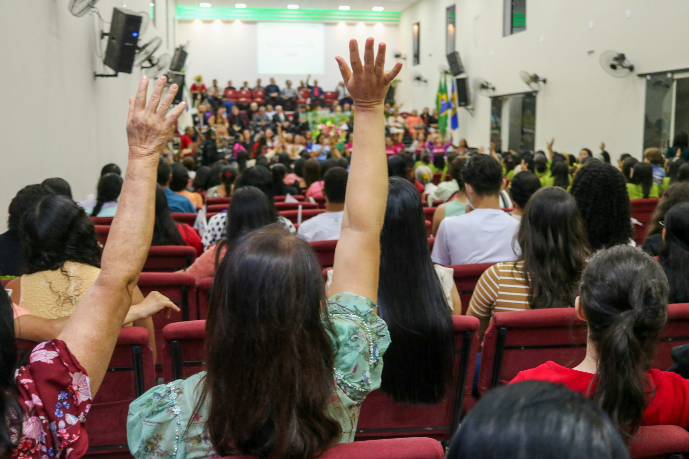

CPP
19h30Encontro da comunidade para comunhão, oração e edificação.

1ª Igreja Presbiteriana do Brasil / Enseada
Somos uma comunidade cristã presbiteriana na Enseada, em Guarujá, comprometida com a Palavra de Deus, a comunhão da igreja e a missão de fazer discípulos.
Participe conosco
Venha estar conosco. Você será muito bem-vindo em nossos momentos de culto, estudo, oração e comunhão.
Encontro da comunidade para comunhão, oração e edificação.
Um momento para estarmos juntos diante de Deus e de sua Palavra.
Escola Bíblica Dominical pela manhã e culto de adoração à noite.
Nossa igreja
A Primeira Igreja Presbiteriana do Brasil na Enseada é uma comunidade cristã presbiteriana localizada em Guarujá, São Paulo.
Nossa identidade está ligada ao compromisso com o evangelho de Jesus Cristo, com a Palavra de Deus e com a missão de fazer discípulos.
“Ide, portanto, fazei discípulos de todas as nações...” Mateus 28:19–20
Venha nos conhecer →
Programação
Confira alguns dos principais momentos de nossa programação.
Encontro de comunhão e edificação.
Momento de comunhão e Palavra.
Escola Bíblica pela manhã e culto à noite.
Ensino
A fé cristã também é vivida através do estudo, da formação e do crescimento conjunto.
Um espaço para estudar a Bíblia, crescer no conhecimento e compartilhar a fé com outras pessoas.
Saiba mais →Momentos de aprendizado e aprofundamento nas Escrituras e na fé cristã.
Saiba mais →Caminhando juntos no conhecimento, na prática e no anúncio do evangelho.
Saiba mais →Vida em comunidade
Espaços para diferentes fases da vida e diferentes formas de servir.

Palavra
Em breve esta área poderá reunir os cultos, pregações, estudos bíblicos e devocionais publicados pela igreja.
Canal no YouTubeLiderança
Esta área será atualizada com os nomes, fotos e informações oficiais da liderança.
Informações oficiais em breve.
Informações oficiais em breve.
Informações oficiais em breve.
Contribua
Em breve disponibilizaremos nesta área as informações oficiais para contribuições.
Estamos aqui
Será uma alegria receber você.
Rua José Antonio Osti, 537
Enseada — Guarujá/SP
CEP 11441-150
(13) 99741-7782
Falar pelo WhatsApp →“Ide, portanto, fazei discípulos de todas as nações.”